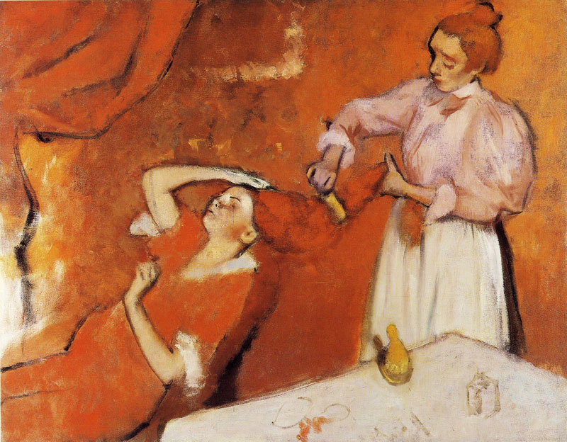

梳头 Combing the Hair ('La Coiffure')
德加 · 约1896年 · 伦敦国家美术馆
Edgar Degas · about 1896 · The National Gallery, London
图片：Wikimedia Commons，公有领域 / Image: Wikimedia Commons, public domain

发现 · Discover
梳头 Combing the hair
女仆左手托起女主人又长又重的红发，右手把梳子拉过头发中段。
With her left hand the maid lifts the long, heavy red hair of her mistress; with her right she pulls a comb through it.
抬起的手 A raised hand
被梳头的力道往后拉，女主人抬起右手按住头，好像是为了稳住自己，或者按住头发。
Pulled back by the force of the strokes, the mistress raises her right hand to her head, as if to steady herself or hold her hair in place.
一条斜线 A diagonal
从女仆的头和手臂，沿着女主人斜靠的身体，形成一条有力的斜线。
A powerful diagonal runs from the maid's head and arm down the length of her mistress's reclining body.
满屏的红 All that red
裙子、头发、墙，几乎全是红色和橙色。德加晚年的颜色越来越大胆，轮廓线也越来越粗黑。
Dress, hair, walls: almost everything is red or orange. In his last years, Degas's colours grew bolder and his outlines thicker and darker.
不同的红 Different reds
国家美术馆的研究发现，裙子用的是朱砂，墙用的是铅丹，再加一点点绿色。
Research at the National Gallery found that the dress is painted in vermilion, and the wall in red lead with a little green added.
马蒂斯的画 Matisse's painting
德加去世后，画家马蒂斯买下了这幅画。马蒂斯后来也以大胆的红色著称。
After Degas's death, the painter Henri Matisse bought this picture. Matisse, too, became known for his bold use of red.
故事 · The story
ACT I 第一幕 · 一个常画的题材 A favourite subject
女人梳头，或被人梳头，是德加常画的题材。这一幅，是他处理这个题材最大胆的作品之一。
Women combing their hair, or having it combed, often appear in Degas's work. This is one of his boldest treatments of the subject.
约1896年 · 伦敦国家美术馆 / about 1896 · The National Gallery, London
ACT II 第二幕 · 晚年的颜色 Late colour
晚年的德加，颜色越来越浓烈，线条越来越粗。这幅画几乎被红色填满。
In his last years, Degas's colours grew more intense and his lines heavier. This painting is almost filled with red.
约1896年 · 伦敦国家美术馆 / about 1896 · The National Gallery, London
ACT III 第三幕 · 从德加到马蒂斯 From Degas to Matisse
德加去世后，马蒂斯买下了这幅画。1937年，伦敦国家美术馆把它买了下来，今天它挂在45号展厅。
After Degas died, Matisse bought the painting. In 1937 the National Gallery acquired it. Today it hangs in Room 45.
约1896年 · 伦敦国家美术馆 / about 1896 · The National Gallery, London
一幅几乎全是红色的画。 A painting made almost entirely of red.
作品档案 · Artwork record
| 画家（生卒年） · Artist (dates) | 埃德加·德加（1834–1917） / Edgar Degas (1834–1917) |
|---|---|
| 画名 · Title | 梳头 / Combing the Hair ('La Coiffure') |
| 年份 · Date | 约1896年 / about 1896 |
| 材质 · Medium | 布面油画 / Oil on canvas |
| 尺寸 · Dimensions | 114.3 × 146.7 cm |
| 收藏地 · Collection | 伦敦国家美术馆，45号展厅 / The National Gallery, London, Room 45 |
| 来源说明 · Credit line | 1937年购入（编号 NG4865） / Bought, 1937 (NG4865) |
关于画家 · About the artist
埃德加·德加（1834–1917），法国画家，生于巴黎。他参加了印象派画展，以描绘芭蕾舞者著称。
Edgar Degas (1834–1917) was a French painter, born in Paris. He took part in the Impressionist exhibitions and is best known for his paintings of ballet dancers.